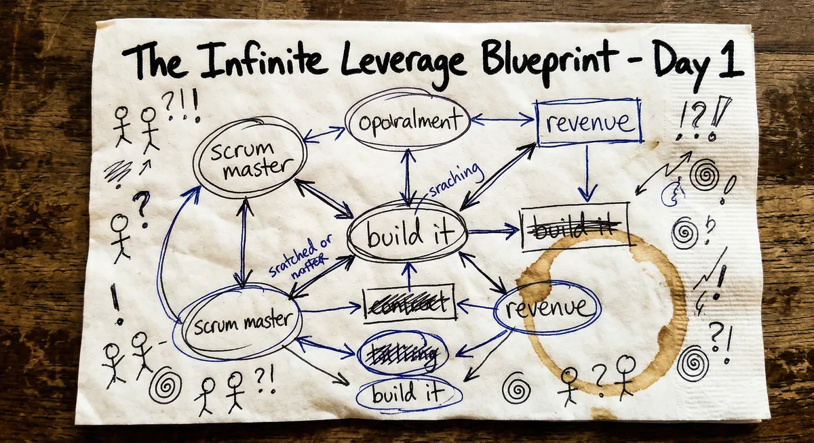

Quick Summary
- The org chart is not something you add when you can afford it. It's the first thing you build.
- Start with Toyota Kata — map your Definition of Awesome before you hire anyone.
- Hire the AI Scrum Master first. When hiring has no cost, organization is the key to execution.
- Build two offices: Innovation (3 agents) and Revenue (2 agents). Each has clear job descriptions and handoffs.
- Run two timescales simultaneously: a daily human rhythm and continuous AI micro-sprints in between.
You're Going
Decision
Office
Office
Timescales
The traditional startup playbook says you start by doing the work. You and your co-founder build things until you can't keep up, then you hire. Organization comes later, when you can afford it.
That logic breaks when hiring has no cost.
Here's exactly how Day 1 worked.
Before you hire anyone — human or AI — you need to know what you're building toward.
I use the Toyota Kata framework for this. It forces you to answer three questions honestly: What does "awesome" look like when this is working? Where are you right now? What's your next milestone?
Thirty minutes with Claude. We built a Definition of Awesome — the north star for what this company looks like when it's fully operational. Then we assessed current condition honestly. No spin, no optimism. Just what's true right now. Then we set a target: what does success look like three months from today?
This session replaced six months of vague strategic planning.
Most founders skip this step. They start building before they know what they're building toward. With AI about to execute on your behalf at machine speed, that clarity is not optional.
Here's where the mindset shift happens.
I had a co-founder joining me. We're both generalists. We're the real intelligence — the founders, the ones with the vision, the taste, the judgment. The question was: what AI joins us first?
The answer surprised me. Not a coder. Not a marketer.
A Scrum Master. In a traditional startup, you would never hire a Scrum Master first. They're expensive, and when it's just two founders, you don't need one. But with AI, there's no cost. And organization is the key to execution.
The AI Scrum Master's job is simple: keep the humans on track. Run the Agile processes. Facilitate daily stand-ups. Track what we're committing to. Hold context across sessions. Make sure things actually move forward between our touchpoints.
We are the real intelligence. The first AI employee's job is to make the real intelligence more effective. When hiring has no cost, you lead with organization. That's never been true before.
This is where things get built. Three AI employees. One team. One job: take ideas and turn them into products. (For a deeper look at how the Innovation Office fits into the bigger picture, see The Four Offices of the Future.)
Before Day 1 is over, all three have job descriptions, scheduled activities, and clear handoffs. They don't start without that. An AI agent without a clear job description is just an expensive chatbot.
Innovation without revenue is a hobby. Two AI employees. One job: make sure we're building something people will actually pay for. The Four Offices framework lays out how the Revenue Office sits alongside Operations, Innovation, and Leadership at scale.
A colleague asked a good question early on: with AI running 24/7 and never sleeping, does Agile even matter anymore?
The answer is: absolutely. Maybe more than ever. The discipline of the cycle is what keeps quality high. Grooming, planning, building, iterating, reviewing, retrospective. That structure prevents you from shipping garbage at the speed of light.
What changes is the clock speed. Here's how it works in practice:
Grooming still takes human time — thinking is where we add value. But once a story is groomed and planned, execution and review happen almost instantly. Same Agile discipline. Radically different clock speed.
Set this up explicitly. Write out the rhythms. What triggers a stand-up? What does a review cycle look like? What does "done" mean? Your Scrum Master needs these rules to operate. Define them, and the machine runs.
Five agents. Two offices. An entire operating rhythm. No office. No payroll. No hiring process. Just job descriptions, skills, and schedules.
Here's the thing that took me a moment to sit with: this is not a productivity hack. This is a different model for how a company is built. The org chart is no longer something you add when you can afford it. It's the product. It's what you build first.
We are the real intelligence. The first five employees are AI. And their first day is today.
Start with the Kata. End with a machine that runs. And once the machine is running, the next challenge is knowing how to lead it — which is exactly what Your Team Needs This Skill covers.
Build Your AI Team
The AI Officer Institute teaches founders and executives exactly how to build and lead AI teams like the one described here — from job descriptions to Agile rhythms to full operating systems. Learn more at caiocoach.com or reach the team at ai-officer.com.
Read next: The Four Offices of the Future → · Using AI Was 2025. Leading AI Is 2026. →
Frequently Asked Questions
What AI agents should a startup hire first?
Counterintuitively, hire an AI Scrum Master first. When hiring has no cost, organization is the key to execution. The Scrum Master keeps the human founders on track and runs Agile processes between sessions — making the real intelligence (the founders) more effective before anything else is built.
How does Agile work with AI agents?
The discipline stays the same — grooming, planning, building, reviewing, retrospective — but the clock speed changes dramatically. Humans operate on a daily rhythm, while the AI Scrum Master runs continuous micro-sprints between human touchpoints. Sprints that used to take two weeks now take minutes.
What is an Innovation Office in an AI company?
The Innovation Office is a three-agent team — Scrum Master, Product Manager, and Developer — whose job is to take ideas and turn them into products. Each agent has a clear job description, scheduled activities, and defined handoffs to the next. No job description means no accountability — just an expensive chatbot.
Can AI replace an org chart for a small company?
AI doesn't replace the org chart — it is the org chart. For a one-man company, the org chart is the first thing you build, not the last. Five AI agents across two offices can run a full operating rhythm with no payroll, no hiring process, and no equity conversations.